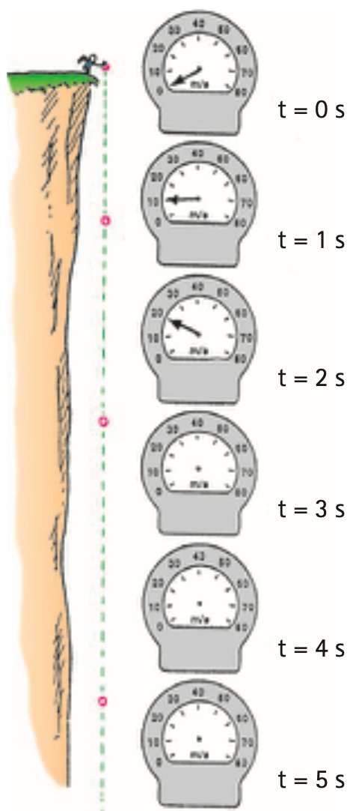
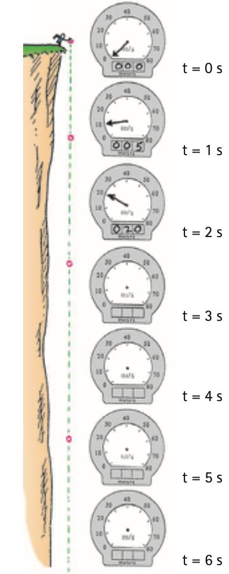
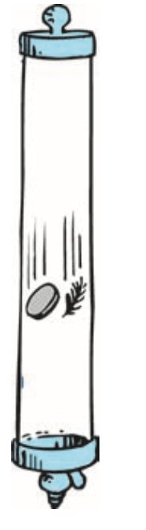
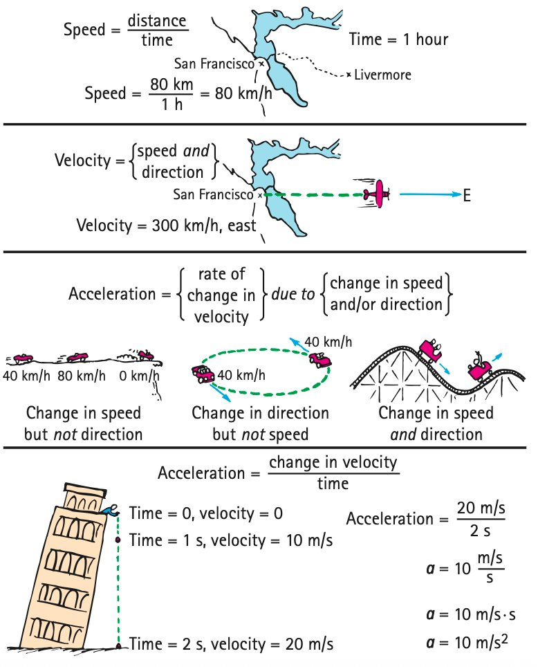

Free Fall Motion
Mathematical idea: Free-fall time connects to speed gained and distance fallen through a small set of relationships.
You will read speedometer-style source figures, compare upward and downward motion, calculate free-fall speed and distance, and separate gravity from air resistance.
Learning Target
Students will describe free fall as motion under the influence of gravity alone and use simple free-fall relationships to determine speed or distance fallen.
I can statements
- I can explain why objects in free fall accelerate at the same rate when air resistance is ignored.
- I can use $g \approx 10\text{ m/s}^2$ to determine speed gained during free fall.
- I can use free-fall patterns to compare distance fallen during different time intervals.
- I can distinguish free fall from falling with significant air resistance.
Vocabulary
These are words you will see in this section. Do not define them yet.
- free fall
- gravity
- free-fall acceleration
- air resistance
- vacuum
- average velocity
Use the preview activity to decide which words you already know, recognize, or do not know yet. Watch for these words in bold when they are first introduced or defined in the reading.
Preview: Skim Before You Read
Directions
Before reading closely, skim the vocabulary list and the section. Look at titles, headings, bold words, pictures, captions, diagrams, tables, and formulas. Do not try to understand everything yet. Your job is to notice what already looks familiar and make predictions about what this section may explain.
Step 1 — Sort the vocabulary. Write each vocabulary word in the column that best matches what you know right now. You may move a word later.
| Know for sure | Recognize | Don’t know yet |
|---|---|---|
Step 2 — Skim the section. Record what catches your attention before you read closely.
| What I noticed | |
|---|---|
| What I predict | |
| What I wonder |
Content: Read, Look, Annotate, Apply
Directions
Read in short chunks. Annotate the prose and the figures together: underline evidence, circle or highlight bold vocabulary, label arrows or measured features, connect a sentence to an image, and write short questions or connections in the margins.
Reading 1: Falling Under Gravity Alone
An object is in free fall when it moves under the influence of gravity alone, with effects such as air resistance ignored. The source separates this idealized motion from everyday falling situations in which air can matter.
Gravity causes freely falling objects near Earth to change velocity at a nearly constant rate. The textbook rounds this free-fall acceleration to about 10 m/s each second, written $g \approx 10\text{ m/s}^2$, so the pattern is easy to see.
A rock dropped from rest has a speed of about 10 m/s after 1 s, 20 m/s after 2 s, 30 m/s after 3 s, and so on. The important evidence is not merely that the rock moves faster, but that it gains about the same amount of speed during each second.

Image read: Fill in the missing speedometer values for later times and bracket two one-second intervals that show the same gain in speed.
The speed pattern can be summarized with $v=gt$ for an object dropped from rest. The formula is a compact model of the repeated 10 m/s-per-second change shown in the figure.
Stop and Discuss
- What evidence in the speedometer figure shows constant acceleration?
- Why does $g \approx 10\text{ m/s}^2$ mean more than simply “the object is moving at 10 m/s”?
Teacher answer: Speed rises by about 10 m/s each second, showing constant acceleration. g is a rate of change of velocity, not a speed value.
For an object dropped from rest near Earth, use the rounded acceleration $g \approx 10\text{ m/s}^2$:
$$v=gt$$This means the speed gained is about 10 m/s during each second of free fall when air resistance is ignored.
Example 1: Speed After Three Seconds
A rock is dropped from rest and falls freely for 3 s. Use $g \approx 10\text{ m/s}^2$.
- Calculate its speed after 3 s.
- Explain how the answer matches the “10 m/s gained each second” pattern.
- Name the assumption that allows this simple free-fall model.
Teacher answer: v = gt = 30 m/s. The model assumes gravity alone is significant (air resistance ignored).
You Try It 1: Speed After 4.5 Seconds
A ball is dropped from rest and is in free fall for 4.5 s. Use $g \approx 10\text{ m/s}^2$.
- Calculate its speed after 4.5 s.
- Explain what the acceleration tells you about the speed change during each second.
- State what is being ignored in the model.
Teacher answer: v = 45 m/s. Students should state that air resistance is ignored.
Reading 2: Upward Motion Still Has Downward Acceleration
The free-fall idea also applies after a ball is thrown upward and leaves the thrower’s hand. Once released, the ball slows as it rises because gravity continues to change its velocity downward by about 10 m/s each second.
At the highest point, the ball’s instantaneous speed is momentarily zero. That does not mean gravity turns off. The acceleration remains downward, so the velocity continues changing and the ball begins moving downward.
On the way down, the ball gains downward speed at the same rate that it lost upward speed on the way up. At equal heights, the source figure shows equal speed magnitudes in opposite directions when air resistance is ignored.

Image read: Find two positions at equal height, one upward and one downward. Compare the speed magnitudes and then compare the velocity directions.
The figure is a useful reminder that zero velocity at one instant and zero acceleration are different ideas. At the top, velocity is zero for an instant while acceleration is still approximately 10 m/s² downward.
Stop and Discuss
- At the top of the ball’s path, what is zero and what is not zero?
- Use two equal-height positions in the figure to compare speed and velocity on the way up and on the way down.
Teacher answer: At the top, speed/velocity is zero for an instant; acceleration remains about 10 m/s² downward. Equal-height speeds match in magnitude but directions are opposite.
Example 2: Thrown Up at 30 m/s
A ball leaves a hand moving upward at 30 m/s. Ignore air resistance and use the 10 m/s change each second.
- Predict its upward speed after 1 s and after 2 s.
- When will it reach the top?
- What is its acceleration at the top? Explain.
Teacher answer: From 30 m/s upward, speeds are 20 m/s after 1 s and 10 m/s after 2 s; top at 3 s; acceleration at top remains downward.
You Try It 2: Thrown Up at 20 m/s
A ball leaves a hand moving upward at 20 m/s. Ignore air resistance.
- How long until its upward speed reaches zero?
- What will its speed be 1 s after the top?
- Explain why the acceleration does not become zero at the top.
Teacher answer: Top after 2 s; one second later speed is 10 m/s downward; acceleration is still due to gravity.
Reading 3: How Far Is Different from How Fast
The source warns that “how far” and “how fast” are easy to mix up. Speed tells how fast the object is moving; distance tells how much ground it has covered. A freely falling object does not fall equal distances each second because its speed is increasing.
Galileo found that for motion starting from rest with constant acceleration, distance grows with the square of time. For free fall from rest this is modeled by $d=\frac{1}{2}gt^2$.
After 1 s, the object has reached 10 m/s, but it has not traveled 10 m during that first second. It began at 0 m/s and ended at 10 m/s, so its average velocity over that interval has magnitude 5 m/s. Over 1 s, that corresponds to about 5 m of fall.

Image read: Compare the speed change each second with the distance added each second. Mark one pattern that stays constant and one pattern that grows.
As time continues, the total distances 5 m, 20 m, 45 m, 80 m, and 125 m grow more rapidly. The acceleration can remain constant even though the distance covered during each new second gets larger.
Stop and Discuss
- Why does a rock that reaches 10 m/s after 1 s fall only about 5 m during that first second?
- Which pattern is constant in free fall: the speed gained each second or the distance fallen each second? Explain.
Teacher answer: During the first second average speed is 5 m/s, so distance is 5 m. Speed gain is equal each second; distance increments grow.
For free fall from rest:
$$d=\frac{1}{2}gt^2$$For constant acceleration, average velocity can also be found from the initial and final velocities:
$$v_{avg}=\frac{v_i+v_f}{2}$$Use $g \approx 10\text{ m/s}^2$ unless a problem states a different value.
Example 3: Distance in Two Seconds
A rock is dropped from rest and falls freely for 2 s. Use $g \approx 10\text{ m/s}^2$.
- Use $d=\frac{1}{2}gt^2$ to find the distance fallen.
- Find the final speed with $v=gt$.
- Find the average velocity magnitude from 0 m/s and the final speed, then connect it to the distance.
Teacher answer: d = 20 m; final speed = 20 m/s; average velocity magnitude = 10 m/s, and 10 m/s × 2 s = 20 m.
You Try It 3: Distance in Three Seconds
A ball is dropped from rest and falls freely for 3 s. Use $g \approx 10\text{ m/s}^2$.
- Calculate the distance fallen.
- Calculate the final speed.
- Compare the distance after 3 s with the distance after 1 s and explain why the increase is not linear.
Teacher answer: d = 45 m; final speed = 30 m/s. Distance grows with t², not in equal increments.
Reading 4: When Air Changes the Falling Motion
Air resistance is a force from the air that can change falling motion. A feather, leaf, or flat sheet of paper may fall much more slowly than a compact heavy object because the air’s effect is large compared with the object’s motion.
The textbook separates that situation from ideal free fall by using a vacuum, a region with the air removed. In the source demonstration, a coin and a feather fall with the same acceleration inside an evacuated tube.

Image read: Label which difference between the air-filled and evacuated cases changes: the objects, gravity, or the amount of air resistance. Use the image as evidence.
This result supports Galileo’s claim that when air resistance is small enough to ignore, objects of different masses share the same free-fall acceleration. Different landing times in ordinary air do not by themselves prove that gravity accelerates heavier objects more.

Image read: In the motion-analysis summary, trace the chain from position change to speed, velocity, and acceleration. Circle the part that represents a change in velocity rather than velocity itself.
The free-fall formulas in this section are models for motion in which gravity is the dominant influence. When air resistance is significant, the simple patterns may no longer match the observed motion.
Stop and Discuss
- Why do a coin and feather fall together in a vacuum but not necessarily in air?
- What evidence would make you decide that an everyday falling object is not well modeled as free fall?
Teacher answer: Air resistance delays the feather in air; removing air lets coin and feather share the same free-fall acceleration.
Example 4: Coin and Feather
A coin and feather are dropped together first in air and then in a vacuum tube.
- Predict which lands first in air and explain the role of air resistance.
- Predict what happens in the vacuum.
- Explain what the vacuum result says about free-fall acceleration.
Teacher answer: In air the crumpled paper usually lands first because it experiences less air resistance for its shape; in a vacuum both fall together.
You Try It 4: Flat Paper and Paper Ball
Two equal sheets of paper are used. One remains flat; the other is tightly crumpled into a ball. They are dropped together in air.
- Predict which is likely to land first.
- Explain the difference using air resistance rather than mass alone.
- Predict what would happen in a vacuum.
Teaching note: Keep “how fast” (v = gt), “how far” (d = 1/2gt²), and “how quickly velocity changes” (g) visibly separate.
Vocabulary: Define the Terms
You have now seen these words in the reading, images, and practice. Use this table to consolidate the physics meaning of each term.
| Vocabulary term | Definition |
|---|---|
| free fall | Motion under the influence of gravity alone, with other effects such as air resistance ignored. |
| gravity | The interaction that causes objects near Earth to accelerate downward. |
| free-fall acceleration | The nearly constant acceleration of an object in free fall near Earth, about $10\text{ m/s}^2$ in this unit. |
| air resistance | A force from air that can alter the motion of a falling object. |
| vacuum | A region with essentially no air, so air resistance is removed or greatly reduced. |
| average velocity | For constant acceleration, the mean of initial and final velocity: $v_{avg}=\frac{v_i+v_f}{2}$. |
Summary
- Free fall means motion under gravity alone; near Earth we use $g \approx 10\text{ m/s}^2$.
- For an object dropped from rest, $v=gt$ models the speed gained during free fall.
- Free-fall distance from rest is modeled by $d=\frac{{1}}{{2}}gt^2$, so distance does not increase by equal amounts each second.
- At the top of a vertical toss, velocity is momentarily zero but acceleration is still downward.
- Air resistance can make objects fall differently; in a vacuum, different objects share the same free-fall acceleration.
Teaching note: Summary should include the top-of-toss misconception and the role of air resistance.
Common Mistakes
| Mistake | Why it is tempting | Check instead |
|---|---|---|
| Saying heavier objects always fall faster. | Heavier objects often beat feathers in air. | Separate gravity from air resistance; compare the vacuum case. |
| Saying acceleration is zero at the top of a toss. | The speed is zero for an instant. | Ask whether gravity is still changing the velocity. |
| Using $v=gt$ to answer a distance question. | Both formulas contain g and t. | Decide first whether the question asks how fast or how far. |
| Assuming equal acceleration means equal distance each second. | Acceleration is constant. | Constant acceleration means equal velocity changes, not equal distance increments. |
In one sentence, define free fall.
A rock is dropped from rest for 4 s. Using $g \approx 10\text{ m/s}^2$, determine its speed and explain the pattern used.
What is one thing you learned in this section? Explain it in at least one complete sentence.
What is one thing from this section you still need to understand or practice more? Be specific.